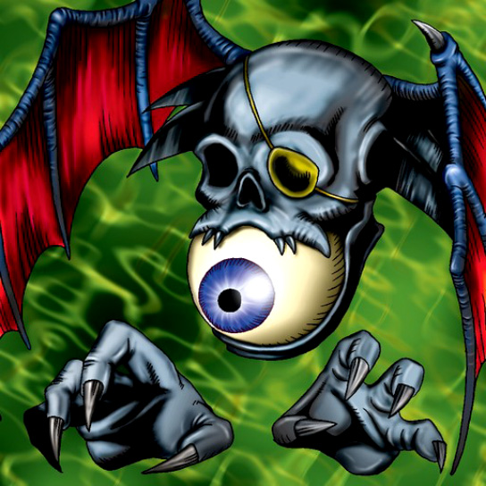

Blue-Eyed Silver Zombie

Description: "When this card is flipped face-up, all your monsters are transformed into ZOMBIE monsters."
STATS
ATK: 900
DEF: 700DECK COST
Deck Cost per Card: 21EFFECT NOT IMPLEMENTED
Fusion List (30 Possible Fusions)
- Blue-Eyed Silver Zombie + Ancient Jar = Stone Ghost
- Blue-Eyed Silver Zombie + Armaill = Zombie Warrior
- Blue-Eyed Silver Zombie + Armed Ninja = Zombie Warrior
- Blue-Eyed Silver Zombie + Bean Soldier = Pumpking the King of Ghosts
- Blue-Eyed Silver Zombie + Boo Koo = Magical Ghost
- Blue-Eyed Silver Zombie + Celtic Guardian = Armored Zombie
- Blue-Eyed Silver Zombie + Crawling Dragon #2 = Skelgon
- Blue-Eyed Silver Zombie + Crawling Dragon = Skelgon
- Blue-Eyed Silver Zombie + Darkworld Thorns = Pumpking the King of Ghosts
- Blue-Eyed Silver Zombie + Dragon Piper = Flame Ghost
- Blue-Eyed Silver Zombie + Dragon Zombie = Skelgon
- Blue-Eyed Silver Zombie + Eyearmor = Zombie Warrior
- Blue-Eyed Silver Zombie + Graveyard and the Hand of Invitation = The Snake Hair
- Blue-Eyed Silver Zombie + Greenkappa = Zombie Warrior
- Blue-Eyed Silver Zombie + Hinotama Soul = Flame Ghost
- Blue-Eyed Silver Zombie + M-Warrior #1 = Zombie Warrior
- Blue-Eyed Silver Zombie + M-Warrior #2 = Zombie Warrior
- Blue-Eyed Silver Zombie + Masked Clown = Zombie Warrior
- Blue-Eyed Silver Zombie + Mushroom Man = Wood Remains
- Blue-Eyed Silver Zombie + Mystic Lamp = Magical Ghost
- Blue-Eyed Silver Zombie + Nemuriko = Magical Ghost
- Blue-Eyed Silver Zombie + Oscillo Hero = Armored Zombie
- Blue-Eyed Silver Zombie + Petit Dragon = Dragon Zombie
- Blue-Eyed Silver Zombie + Princess of Tsurugi = Zombie Warrior
- Blue-Eyed Silver Zombie + Left Arm of the Forbidden One = Magical Ghost
- Blue-Eyed Silver Zombie + Skelgon = Curse of Dragon
- Blue-Eyed Silver Zombie + Swordsman from a Foreign Land = Zombie Warrior
- Blue-Eyed Silver Zombie + The Little Swordsman of Aile = Zombie Warrior
- Blue-Eyed Silver Zombie + Wicked Dragon with the Ersatz Head = Dragon Zombie
- Blue-Eyed Silver Zombie + Yashinoki = Wood Remains